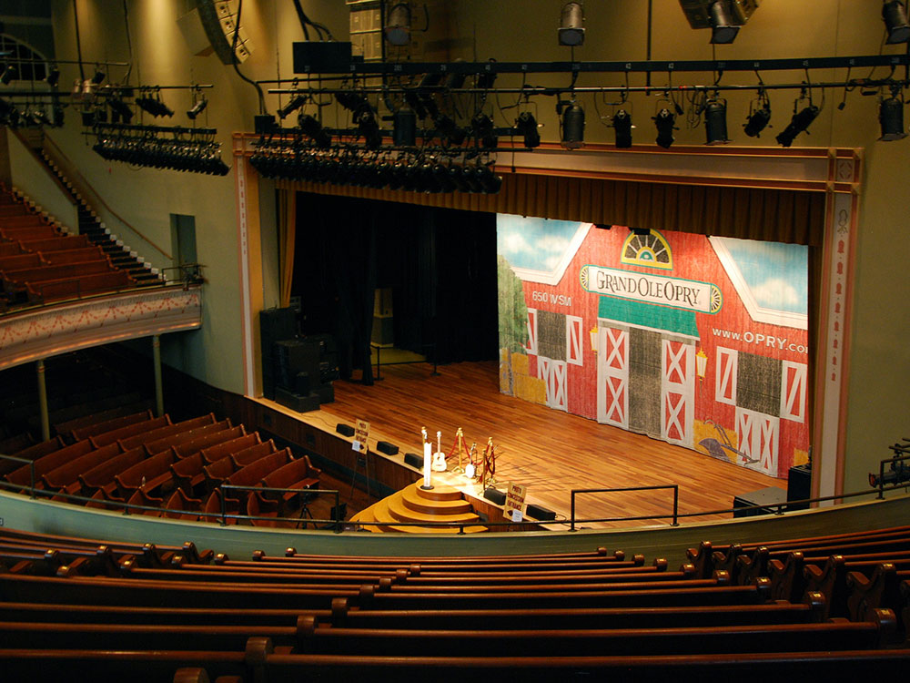
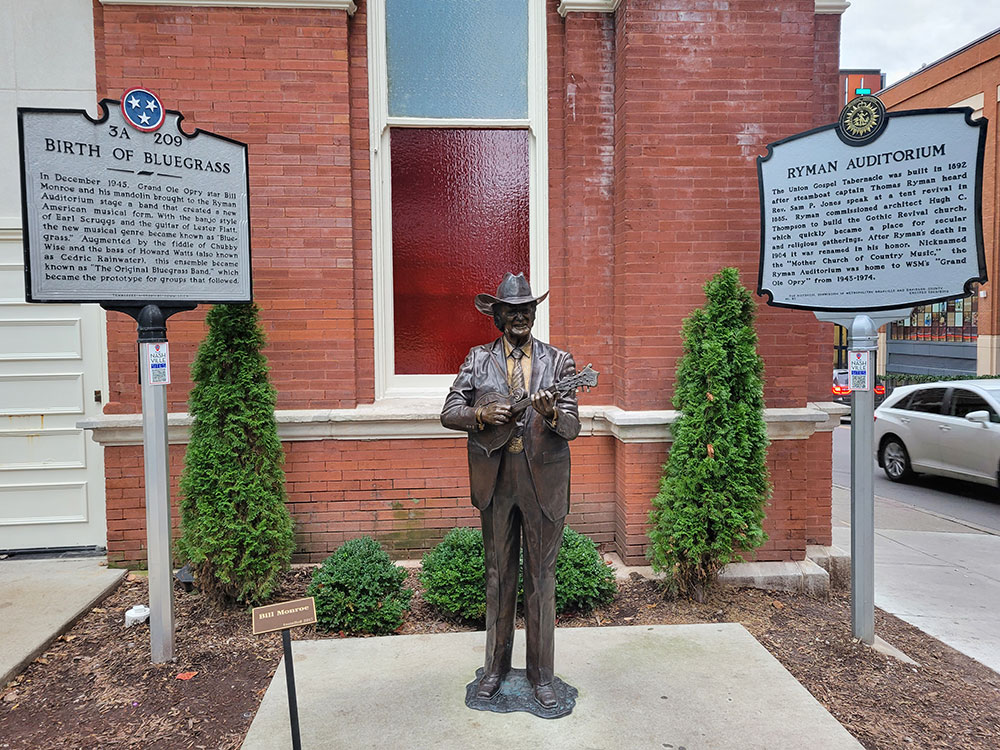
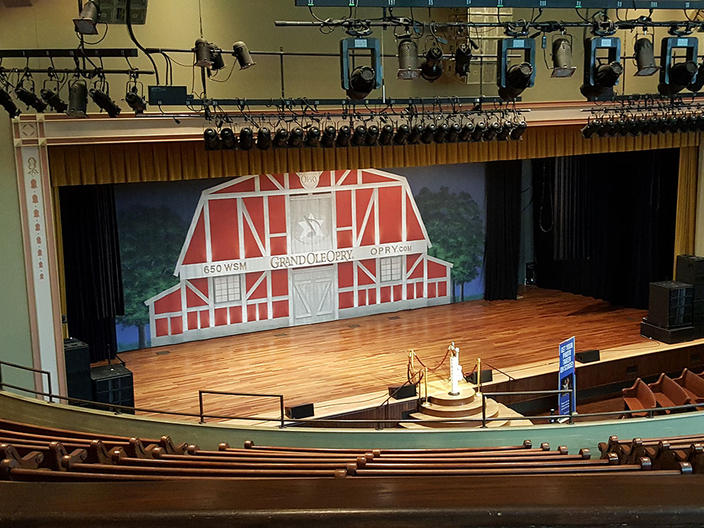

2,362-seat live-performance venue designated a National Historic Landmark for its pivotal role in the popularization of country music
General Information
Concert and event hours vary by performance schedule.
Guided Backstage Tour: $46.85
VIP Tour: $68.35
Children 12 and under receive free admission on self-guided tours with a paid adult.
How to Get There
From Downtown Nashville: The Ryman Auditorium is located in the heart of downtown Nashville, one block from Broadway. Walk or drive to 116 Rep. John Lewis Way N, near Bridgestone Arena and the Country Music Hall of Fame.
Overview
Ryman Auditorium (also known as Grand Ole Opry House and Union Gospel Tabernacle) is a 2,362-seat live-performance venue located in Nashville, Tennessee. It is best known as the home of the Grand Ole Opry from 1943 to 1974 and is owned and operated by Ryman Hospitality Properties, Inc. Ryman Auditorium was included in the National Register of Historic Places in 1971 and was later designated a National Historic Landmark on June 25, 2001, for its pivotal role in the popularization of country music.
The auditorium opened as the Union Gospel Tabernacle in 1892. Its construction was spearheaded by Thomas Ryman (1843-1904), a Nashville businessman who owned several saloons and a fleet of riverboats. Ryman conceived the idea of the auditorium as a tabernacle for the influential revivalist Samuel Porter Jones. He had attended one of Jones' 1885 tent revivals with the intent to heckle, but was instead converted into a devout Christian who pledged to build the tabernacle so the people of Nashville could attend large-scale revivals indoors. It took seven years to complete and cost US$100,000 (equivalent to $2,880,370 in 2020). However, Jones held his first revival at the site on May 25, 1890, with only the building's foundation and six-foot (1.8 m) walls standing.
Jones sought to name the tabernacle in Ryman's honor, but Ryman denied the request several times. When Ryman died in 1904, his memorial service was held at the tabernacle. During the service, Jones proposed the building be renamed Ryman Auditorium, which was met with the overwhelming approval of the attendees. Jones died less than two years later in 1906.
Though the building was designed to be a house of worship - a purpose it continued to serve throughout most of its early existence - it was often leased to promoters for nonreligious events in an effort to pay off its debts and remain open. In 1904, Lula C. Naff, a widow and mother who was working as a stenographer, began to book and promote speaking engagements, concerts, boxing matches, and other attractions at the Ryman in her free time. In 1914, when her employer went out of business, Naff made booking these events her full-time job. She eventually transitioned into a role as the Ryman's official manager by 1920.
Naff's ability to book stage shows and world-renowned entertainers in the city's largest indoor gathering place kept the Ryman at the forefront of Nashville's consciousness and enhanced the city's reputation as a cultural center for the performing arts, even as the building began to age. W.C. Fields, Will Rogers in 1925, Charlie Chaplin, Bob Hope with Doris Day in '49, Harry Houdini in '24, and John Philip Sousa (among others) performed at the venue over the years, earning the Ryman the nickname, "The Carnegie Hall of the South". The Ryman hosted lectures by U.S. presidents Theodore Roosevelt and William Howard Taft in 1907 and 1911, respectively. World-famous Italian opera singer Enrico Caruso appeared in concert there in 1919. It also hosted the inaugurations of three governors of the state of Tennessee.
After debuting in 1925, the local country music radio program known as the Grand Ole Opry (originally called the WSM Barn Dance) became a Nashville institution. Broadcast over clear-channel AM radio station WSM, it could be heard in 30 states across the eastern part of the nation. Although not originally a stage show, the Opry began to attract listeners from around the region who would go to the WSM studio to see it live. When crowds got too large for the studio, WSM began broadcasting the show from the Hillsboro Theatre (now Belcourt Theatre) in 1934. The Opry moved to East Nashville's Dixie Tabernacle in 1936 and then to War Memorial Auditorium in 1939.
After four years - and several reports of upholstery damage caused by its rowdy crowds - the Opry was asked to leave War Memorial and sought a new home yet again. Thanks to its wooden pews and central location, Naff and other Ryman leaders thought the auditorium would be a perfect venue for such an audience and began renting the venue to WSM for its shows. The Grand Ole Opry was first broadcast from the Ryman on June 5, 1943, and originated there every week for nearly 31 years thereafter. Every show sold out, and hundreds of fans were often turned away.
During its tenure at Ryman Auditorium, the Opry hosted the biggest country music stars of the day and became a show known around the world. In addition to its home on WSM, portions of the show (at various times throughout its history) were also broadcast on network radio and television to a wider audience. Melding its then-current usage with the building's origins as a house of worship, the Ryman got the nickname "The Mother Church of Country Music", which it still holds to this day.
Prior to September 27, 1963, Ryman Auditorium had no singular owner, instead being an independent entity governed by a board of directors. That changed when WSM, Inc., purchased the building for US$207,500 (equivalent to $1,754,052 in 2020). Upon WSM assuming total control of the auditorium, it was renamed the Grand Ole Opry House, although the Ryman name proved difficult to shed after nearly 60 years in use.
WSM financed minor upgrades to the Opry House in 1966 to maintain its functionality, but soon began making plans to move the Opry to a new location altogether. Despite the building's deteriorating condition, the lack of air conditioning, and the abundance of unsavory surroundings in its urban neighborhood, the show's increasing popularity often resulted in crowds too large to fit inside the venue. Plans announced in 1969 centered around a larger, custom-built auditorium that would provide a more controlled and comfortable atmosphere for audiences and performers alike, as well as better radio and television production facilities. The company purchased a large tract of land in a then-rural area a few miles away, and the new Opry theater served as the anchor of a grand entertainment complex. The development became known as Opryland USA and eventually included the Opryland theme park and the Opryland Hotel.
The amusement park opened on May 27, 1972, and the new venue (also called the Grand Ole Opry House) debuted on Saturday, March 16, 1974. The last Opry show at the Ryman occurred the previous evening, on Friday, March 15. The final shows downtown were emotional. Sarah Cannon, performing as Minnie Pearl, broke character and cried on stage. In an effort to maintain continuity with the Opry's storied past, a large circle was cut from the floor of the Ryman stage and inlaid into the center of the new Opry stage. In another traditional holdover, the new Opry House was also designed to feature pew seating, although (unlike the Ryman) they are cushioned.
Following the departure of the Opry, the Ryman sat mostly vacant and deteriorating for nearly 20 years, as the neighborhood surrounding it continued to see the increasing effects of urban decay. However, the building continued to stand with an uncertain future. Despite its regressing condition and the absence of performances, Ryman Auditorium was never shuttered, and it continued to hold such significance as an attraction that it remained open for tours.
In 1989, Gaylord Entertainment began work to beautify the Ryman's exterior. The structure of the building was also improved, as the company installed a new roof, replaced broken windows, and repaired broken bricks and wood. The building's interior, however, was left mostly untouched.
From April 30 to May 2, 1991, Emmylou Harris and the Nash Ramblers performed three acoustic concerts at the dilapidated building. Some of the recordings were released as an album entitled At the Ryman, which won the Grammy Award for Best Country Performance by a Duo or Group at the 35th Annual Grammy Awards in 1993. The concerts and album's high acclaim are given near-universal credit for the renewed interest in reviving Ryman Auditorium as an active venue.
In September 1993, renovations began to restore it into a world-class concert hall. In the renovations, the auditorium's original wooden pews were removed, refurbished, and returned to the building to continue to serve as the auditorium's seating. Both far-reaching ends of the U-shaped balcony (which had previously extended all the way to the building's south wall) were removed, and new backstage facilities were built inside the original building, while a new structure containing a lobby, restrooms, concessions, offices, and a grand staircase leading to the balcony was constructed and attached to the east side of the auditorium. This also resulted in the Ryman's main entrance being moved from the west side of the building (Fifth Avenue North) to the east side (Fourth Avenue North), where an outdoor entry plaza, complete with a large statue of Thomas Ryman, also greeted visitors. Notably, the renovations resulted in Ryman Auditorium becoming air-conditioned for the first time.
On Sunday, October 18, 1998, the Opry held a benefit show at Ryman Auditorium, marking its return to the venue for the first time since its final show on March 15, 1974. The show was well received by fans, performers, and management alike, so the decision was made to host the Opry's regular shows there on January 15 and 16, 1999, as part of the celebration to commemorate 25 years at the new venue.
Beginning in November 1999, the Opry was held at Ryman Auditorium for three months, mostly due to the success of the January shows, but partly due to the ongoing construction of Opry Mills shopping mall (which replaced the Opryland USA theme park in 2000) next door to the Grand Ole Opry House. The Opry then returned to the Ryman for all of its November, December, and January shows every year, allowing the production to acknowledge its roots while also taking advantage of a smaller venue during the off-peak season for tourism, and freeing the Grand Ole Opry House for special holiday presentations.
This article uses material from the Wikipedia article "Ryman Auditorium" which is released under the Creative Commons Attribution-Share-Alike License 3.0


